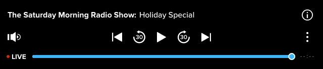

Overview
The Audio-Only Player functionality enables Ooyala customers (such as broadcasters, publishers, operators, and other organizations who offer audio-primary or audio-only content, or have a mixture of audio and video) to use the Ooyala platform as a one-stop shop that enables them to offer Audio-Only playback experience across web and mobile for live audio streaming (through OoyalaLIVE), audio-on-demand (through OoyalaPLAY), and syndication for podcasting (as well as to process live and on-demand audio content).
This is suitable for organizations who are looking to provide a holistic OTT experience that manages video and audio content in a single platform (such as Live and On-Demand radio offerings) in areas like education, news and sports content, faith-based organizations, enterprise companies offering conferences or internal meetings via audio-only platforms, and more.
As a result, Ooyala customers are enabled to:
Functionality
The Audio-Only Player functionality currently supports the following features:
Audio-Only playback experience across web and mobile for:
In more detail:
How it works
Audio-Only Player employes the same workflows that are used for video playback, just with different settings and some limitations in supported functionality at the current stage. The following actions are typically used:
This can be done via Backlot, OIS Basic Ingest, and/or OIS Manifest Ingest. In Backlot, we now provide a default Audio-Only Player profile that is available for all users (see the next section) - selecting this default Audio-Only Player automatically classifies the output as audio-only. However, when you use OIS ingestion, you can specify different processing profiles too that combine the different audio/video outcome combinations. For example - audio targeted for video (in which case a slate is added), or video targeted for audio (in which case only the audio content is generated), or video that can be used both for audio-only streams and video+audio streams. For more information about ingestion, see Audio-Only Player: Asset Processing.
With the introduction of Audio-Only Player, the following transcoding outputs are now available:
For more information about transcoding, see the Transcoding section in Audio-Only Player: Asset Processing.
For Audio-Only Player, the Player setup process is identical to the one used before for Video Players (see Managing Players in Backlot). However, there are some differences, as follows:
For more information about setting up an Audio-Only Player, see Audio-Only Player: Player Setup.
For more information about configuring Audio-Only streaming on mobile SDK, see Configuring Audio-Only Streaming on Mobile SDK for iOS and Android.
Ooyala provides a default Audio-Only Player in addition to the existing default Video Player. It is available for all Ooyala customers in Backlot.
